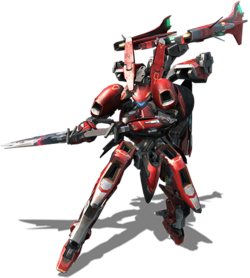
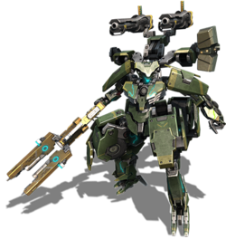
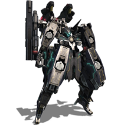
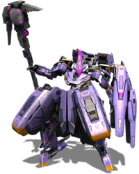

Formula

Formula is a custom Light Frame based Skell model and the standard deployed model. This frame is the basis for all the Skell models. It is a lightweight model specializing in high-speed combat, with a two-wheeled vehicle mode that is likewise light and speedy.It is the most affordable entry level model, with the level 30 frame costing 217,000 Credits and the level 50 frame costing 1,740,000 Credits.
Verus
Verus is a custom Light Frame based Skell model with an output that rivals a Medium Frame model's. However, this model's very high performance is offset by its Fuel capacity, stemming from its light frame.The level 30 Verus frame costs 268,000 Credits and the level 50 frame costs 2,150,000 Credits. Its standard equipment is the shoulder-mounted "G-Buster", specially developed alongside this model building.
urban

Urban is a custom Light Frame based Skell model specially produced for urban deployment. This model has high durability and combat performance, but its reinforced armor reduces its maneuverability and operating time.However, in vehicle mode its maneuverability and operating time are excellent, owing to its Light Frame design. The level 30 Urban frame costs 240,000 Credits and the level 50 frame costs 1,920,000 Credits.
lailah

Lailah is a custom Medium Frame based Skell model. Despite a higher weight compared to the Light Frame models, its light design provided a high mobility along with higher power output, though at the cost of durability.The level 30 Lailah frame costs 313,000 Credits and the level 50 frame costs 2,508,000 Credits. There is also a level 60 frame, the Lailah Queen, which can be crafted post-story. Its standard equipment is the shoulder-mounted "F-Rifle", specially developed alongside this model. Lailah is equipped with the NAGI gear.
inferno
Inferno is a custom Medium Frame based Skell model. This is the main model chosen for large-scale production & deployment. It has a high durability and balanced attack performance, but has less evasion as a trade-off.The level 30 Inferno frame costs 345,000 Credits and the level 50 frame costs 2,764,000 Credits. Its standard equipment is the shoulder-mounted "B-Gatling", specially developed alongside this model.
Mastema
Mastema is a Heavy Frame based Skell model. It is excellent in distance combat because it is specially designed for Ranged Attacks. However, due to a very high weight it is difficult to maneuver. Its vehicle mode is multi-legged, bearing resemblance to a spider.The level 30 Mastema frame costs 440,000 Credits and the level 50 frame costs 3,520,000 Credits. Its standard equipment is the shoulder-mounted "M-Sniper", specially developed alongside this model.
Amdusias
Amdusias is a Heavy Frame based Skell model. It is excellent in close combat because it is specially designed for Melee Attack. It is the Skell that boasts the highest durability and Attack power. However due to a very high price (depending on the model, 548,000 or 4,390,000 G), it is difficult to obtain.Its standard equipment is the shoulder-mounted "E-Scythe", specially developed alongside this model.